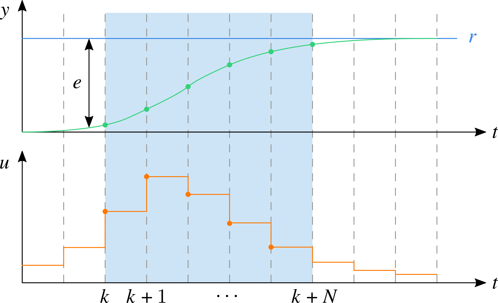

DR_CAN 在他的视频中更新了模型预测控制（MPC, Model Predictive Control），解释了 MPC 的基本原理并对核心公式进行了详细的推导。由于 DR_CAN 讲的实在太好了，这篇文章只能说是对他讲述内容的拙劣记录，权当推导公式的一次练习。
基本原理
之前在 现代控制基础（2）：状态反馈 简单介绍了 LQR 设计法，这是一种最优设计，旨在使控制命令与误差的“功率”加权之和最小。然而，实际系统在扰动的影响下无法按照我们期望的那样运行，也就说外扰打破了理想的最优状态。为了解决这个问题，我们可以使用一个“滑动的窗口”，在这个窗口内进行类似 LQR 的最优设计，这便是 MPC 的基本思路。
如下图所示，上面的绿色曲线表示被控对象的输出，蓝色曲线为参考信号；下面的橙色曲线为相应施加的控制信号。在数字控制中，被控对象的输出和控制器的控制命令都被离散化，样本值如散点所示。

在 \(k\) 时刻，模型预测控制根据当前被控对象的输出对后面的 \(N\) 步进行预测，在将来的 \(N\) 步内，要求控制命令和误差的平方加权和最小。即：寻找 \(N\) 步控制命令（ \(u(i)\, i=k,\,k+1,\,\dots,\,k+N-1\) ），使得下面的代价函数达到最小值
\[J = \sum_{i=0}^{N-1} \left(
e^\mathrm{T}(k+i|k) Q e(k+i|k)
+ u^\mathrm{T}(k+i|k) R u(k+i|k)
\right)
+ e^\mathrm{T}(k+N|k) F e(k+N|k)\]
式中，使用 \((k+i|k)\) 表示 \(k\) 时刻对 \(k+i\) 时刻的预测值。 \(Q\) 和 \(R\) 分别误差和控制的加权矩阵。应当注意的是，预测的状态比控制命令多一个右端边界的点，因此多一个端值误差的加权矩阵 \(F\) 。
求解该优化问题即可得到后 \(N\) 步的控制命令，但是 MPC 只施加当前时刻的命令 \(u(k)\) ，下一时刻的控制命令将重复上述操作重新进行优化估计。所以说 MPC 可以认为是基于“滑动窗口”的最优设计。
上述优化问题的解决方案是使用二次规划，因此后面的推导旨在将代价函数写成如下二次规划的标准形式
\[\min_x \left( \frac{1}{2} x^\mathrm{T}Hx + f^\mathrm{T}x \right)\]
公式推导
本文只介绍 MPC 的基本原理，并做如下假设
于是代价函数可以写作
\[J = \sum_{i=0}^{N-1} \left(
x^\mathrm{T}(k+i|k) Q x(k+i|k)
+ u^\mathrm{T}(k+i|k) R u(k+i|k)
\right)
+ x^\mathrm{T}(k+N|k) F x(k+N|k)\]
设系统的离散状态空间方程为
\[x(k+1) = A x(k) + B u(k)\]
于是在预测的控制命令下，系统状态的预测值为
\[\begin{split}\begin{aligned}
x(k|k) &= x(k) \\
x(k+1|k) &= A x(k|k) + B u(k|k) = A x(k) + B u(k|k) \\
x(k+2|k) &= A x(k+1|k) + B u(k+1|k) = A^2 x(k) + AB u(k|k) + B u(k+1|k)\\
&\vdots \\
x(k+N|k) &= A^N x(k) + \sum_{i=0}^{N-1} A^{N-1-i}B u(k+i|k)
\end{aligned}\end{split}\]
用矩阵可以将上述 \(N+1\) 个方程表示为
\[\begin{split}\underbrace{\begin{bmatrix}
x(k|k) \\ x(k+1|k) \\ \vdots \\ x(k+N|k)
\end{bmatrix}}_{\mathbf{X}(k)}
= \underbrace{\begin{bmatrix}
I \\ A \\ A^2 \\ \vdots \\ A^N
\end{bmatrix}}_{M} x(k)
+ \underbrace{\begin{bmatrix}
0 & 0 & 0 & \cdots & 0 \\
B & 0 & 0 & \cdots & 0 \\
AB & B & 0 & \cdots & 0 \\
\vdots & \vdots & \vdots & \ddots & 0 \\
A^{N-1}B & A^{N-2}B & A^{N-3}B & \cdots & B
\end{bmatrix}}_{C}
\underbrace{\begin{bmatrix}
u(k|k) \\ u(k+1|k) \\ \vdots \\ u(k+N-1|k)
\end{bmatrix}}_{\mathbf{U}(k)}\end{split}\]
注解
形式上这里有 \(N+1\) 个方程 ，但应当注意状态量 \(x\) 可以是 \(n\) 维的，因此实际上有 \(n(N+1)\) 个方程。
即有 \(\mathbf{X}(k) = Mx(k) + C\mathbf{U}(k)\) 。如此做，代价函数可以表示为
\[\begin{split}\begin{aligned}
J &= \begin{bmatrix}
x(k|k) \\ x(k+1|k) \\ \vdots \\ x(k+N|k)
\end{bmatrix}^\mathrm{T}
\underbrace{\begin{bmatrix}
Q & 0 & \cdots & 0 & 0\\
0 & Q & \cdots & 0 & 0\\
\vdots & \vdots & \ddots & \vdots & \vdots \\
0 & 0 & \cdots & Q & 0\\
0 & 0 & \cdots & 0 & F\\
\end{bmatrix}}_{\bar{Q}}
\begin{bmatrix}
x(k|k) \\ x(k+1|k) \\ \vdots \\ x(k+N|k)
\end{bmatrix}
+ \begin{bmatrix}
u(k|k) \\ u(k+1|k) \\ \vdots \\ u(k+N-1|k)
\end{bmatrix}^\mathrm{T}
\underbrace{\begin{bmatrix}
R & 0 & 0 & \cdots & 0\\
0 & R & 0 & \cdots & 0\\
0 & 0 & R & \cdots & 0\\
\vdots & \vdots & \vdots & \ddots & \vdots \\
0 & 0 & 0 & \cdots & R
\end{bmatrix}}_{\bar{R}}
\begin{bmatrix}
u(k|k) \\ u(k+1|k) \\ \vdots \\ u(k+N-1|k)
\end{bmatrix} \\
&= \mathbf{X}^\mathbf{T}(k) \bar{Q} \mathbf{X}(k) + \mathbf{U}^\mathrm{T}(k)\bar{R}\mathbf{U}(k) \\
&= \left(Mx(k) + C\mathbf{U}(k)\right)^\mathrm{T} \bar{Q} \left(Mx(k) + C\mathbf{U}(k)\right) + \mathbf{U}^\mathrm{T}(k)\bar{R}\mathbf{U}(k) \\
&= x^\mathbf{T}(k) M^\mathbf{T} \bar{Q} M x(k) + x^\mathbf{T}(k) M^\mathbf{T} \bar{Q} C \mathbf{U}(k)
+ \mathbf{U}^\mathbf{T}(k) C^\mathbf{T} \bar{Q} M x(k) + \mathbf{U}^\mathbf{T}(k) C^\mathbf{T} \bar{Q} C \mathbf{U}(k) + \mathbf{U}^\mathrm{T}(k)\bar{R}\mathbf{U}(k) \\
&= \mathbf{U}^\mathrm{T}(k) \underbrace{\left(C^\mathbf{T} \bar{Q} C + \bar{R}\right)}_{H} \mathbf{U}(k) + 2 \underbrace{x^\mathbf{T}(k) M^\mathbf{T} \bar{Q} C }_{f^\mathrm{T}} \mathbf{U}(k) + x^\mathbf{T}(k) M^\mathbf{T} \bar{Q} M x(k)
\end{aligned}\end{split}\]
优化的对象为 \(\mathbf{U}(k)\) 。注意代价函数的最后一项 \(x^\mathbf{T}(k) M^\mathbf{T} \bar{Q} M x(k)\) 为常数，不影响优化结果，可以不做考虑。与二次规划的标准形式相比，代价函数存在二倍关系，应当注意 \(H\) 和 \(f^\mathrm{T}\) 的选择。最后使用 MATLAB quadprog 进行优化计算即可获得 \(\mathbf{U}(k)\) 。
我在 GitHub 上传了一个简单的 MPC 例子，欢迎留言、讨论。